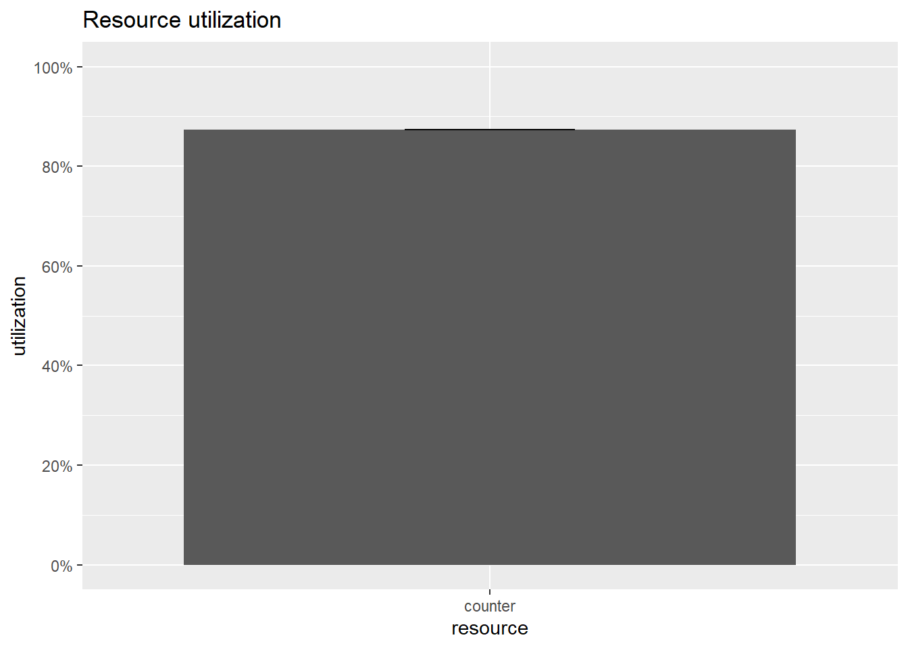
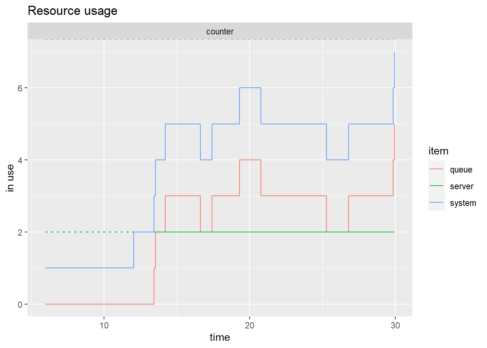

6.1 The donut shop
You may recall that in Chapter 1 we discussed the example of a simple donut shop where we were interested in the waiting time of costumers depending on the number of employees in the shop. We will slowly build a more and more realistic implementation of the shop using simmer. First, if you have never done this, you need to install the package using the code
install.packages("simmer")Once it is installed (that you only need to do once), you then need to load it at the beginning of every R session using the code
library(simmer)As we will see simmer takes advantage of the magrittr pipe operator.
6.1.1 A single customer at a fixed time
We first model a single customer who arrives at the shop for a visit, looks around at the decor for a time and then leaves. There is no queueing. First we will assume his arrival time and the time he spends in the shop are fixed.
The arrival time is fixed at 5, and the time spent in the shop is fixed at 10. We interpret ‘5’ and ‘10’ as ‘5 minutes’ and ‘10 minutes.’ The simulation runs for a maximum of 100 minutes, or until all the customers that are generated complete their visit to the shop.
Let’s define step by step the code that implements this. First we define a variable called customer which describes the evolution of the customer in the shop. The evolution of the customer is called the trajectory and it is given some name. The function log_ produces text which is shown as specific points during the simulation. Lastly, timeout specifies how long the customer will spend in the shop.
customer <-
trajectory("Customer's path") %>%
log_("Here I am") %>%
timeout(10) %>%
log_("I must leave")Now that we have described how the customer behaves in the shop, we must create a variable specifying how the shop itself works. The code below creates the variable shop where first we create a simmer object called shop and then we specify via the function add_generator that a customer arrives after 5 minutes.
shop <-
simmer("shop") %>%
add_generator("Customer", customer, at(5))Now that the shop is created we have to run the simulation using the run command.
shop %>% run(until = 100)## 5: Customer0: Here I am
## 15: Customer0: I must leave## simmer environment: shop | now: 15 | next:
## { Monitor: in memory }
## { Source: Customer | monitored: 1 | n_generated: 1 }The output summarizes what happened during the simulation. A customer arrives at minute 5 and leaves at minute 15. The simulation then stops since there are no other events that can happen in this simple case.
In order to have an overview of the events of the simulation we can also use the function get_mon_arrivals.
shop %>% get_mon_arrivals()## name start_time end_time activity_time finished replication
## 1 Customer0 5 15 10 TRUE 16.1.2 A customer arriving at random
Now we extend the model to allow our customer to arrive at a random simulated time though we will keep the time in the bank at 10, as before.
The change occurs in the arguments to the add_generator function. We will assume that the customer arrival time is generated from an Exponential distribution with parameter 1/5 (that is mean = 5).
set.seed(2021)
customer <-
trajectory("Customer's path") %>%
log_("Here I am") %>%
timeout(10) %>%
log_("I must leave")
shop <-
simmer("shop") %>%
add_generator("Customer", customer, at(rexp(1, 1/5)))
shop %>% run(until = 100)## 5.92531: Customer0: Here I am
## 15.9253: Customer0: I must leave## simmer environment: shop | now: 15.925307087372 | next:
## { Monitor: in memory }
## { Source: Customer | monitored: 1 | n_generated: 1 }shop %>% get_mon_arrivals()## name start_time end_time activity_time finished replication
## 1 Customer0 5.925307 15.92531 10 TRUE 1The trace shows that the customer now arrives at time 5.925307. Changing the seed value would change that time.
6.1.3 Many random customers
We now extend this model to allow multiple arrivals at random. In simulation this is usually interpreted as meaning that the times between customer arrivals are distributed as exponential random variables (we will see later on why this is so). There is little change in our program: we need to adapt the add_generator function. We will run the simulation a shorter time, since otherwise the output becomes massive.
set.seed(2021)
customer <-
trajectory("Customer's path") %>%
log_("Here I am") %>%
timeout(10) %>%
log_("I must leave")
shop <-
simmer("shop") %>%
add_generator("Customer", customer, function() rexp(1, 1/5))
shop %>% run(until = 30)## 5.92531: Customer0: Here I am
## 12.0259: Customer1: Here I am
## 13.3892: Customer2: Here I am
## 15.4026: Customer3: Here I am
## 15.9253: Customer0: I must leave
## 16.807: Customer4: Here I am
## 20.6063: Customer5: Here I am
## 22.0259: Customer1: I must leave
## 23.3892: Customer2: I must leave
## 23.7606: Customer6: Here I am
## 23.8551: Customer7: Here I am
## 24.5296: Customer8: Here I am
## 25.4026: Customer3: I must leave
## 26.807: Customer4: I must leave
## 27.7301: Customer9: Here I am## simmer environment: shop | now: 30 | next: 30.6063456850162
## { Monitor: in memory }
## { Source: Customer | monitored: 1 | n_generated: 11 }shop %>% get_mon_arrivals()## name start_time end_time activity_time finished replication
## 1 Customer0 5.925307 15.92531 10 TRUE 1
## 2 Customer1 12.025928 22.02593 10 TRUE 1
## 3 Customer2 13.389166 23.38917 10 TRUE 1
## 4 Customer3 15.402626 25.40263 10 TRUE 1
## 5 Customer4 16.807015 26.80702 10 TRUE 1So we see that in the 30 minutes we simulated, 10 customers arrived at the shop and 5 of them left after staying there for 10 minutes.
6.1.4 The donut shop with a service counter
So far, the model has been more like an art gallery, the customers entering, looking around, and leaving. Now they are going to require service from an employee. We extend the model to include a service counter that will be modelled as a ‘resource.’ The actions of a Resource are simple: a customer requests a unit of the resource (an employee). If one is free, then the customer gets service (and the unit is no longer available to other customers). If there is no free employee, then the customer joins the queue until it is the customer’s turn to be served. As each customer completes service and releases the unit, the employee can start serving the next in line.
The service counter is created with the add_resource function. Default arguments specify that it can serve one customer at a time, and has infinite queuing capacity.
The seize function causes the customer to join the queue at the counter. If the queue is empty and the counter is available (not serving any customers), then the customer claims the counter for itself and moves onto the timeout step. Otherwise the customer must wait until the counter becomes available. Behaviour of the customer while in the queue is controlled by the arguments of the seize function. Once the timeout step is complete, the release function causes the customer to make the counter available to other customers in the queue.
We will assume that serving time follows a Normal distribution with mean 10 and standard deviation 2.
set.seed(2021)
customer <-
trajectory("Customer's path") %>%
log_("Here I am") %>%
seize("counter") %>%
timeout(function() rnorm(1,10,2)) %>%
release("counter") %>%
log_("Finished")
shop <-
simmer("shop") %>%
add_resource("counter") %>%
add_generator("Customer", customer, function() rexp(1, 1/5))
shop %>% run(until = 30)## 5.92531: Customer0: Here I am
## 12.0259: Customer1: Here I am
## 13.4303: Customer2: Here I am
## 16.6226: Customer0: Finished
## 17.2296: Customer3: Here I am
## 28.4187: Customer1: Finished## simmer environment: shop | now: 30 | next: 36.6490003143151
## { Monitor: in memory }
## { Resource: counter | monitored: TRUE | server status: 1(1) | queue status: 1(Inf) }
## { Source: Customer | monitored: 1 | n_generated: 5 }So we see that 4 customers arrived in the shop and that 2 of them were served. Let’s use the function get_mon_arrivals to have a summary of each customer. By default, the function does not tell us the waiting time for a customer, which we will need to compute.
shop %>%
get_mon_arrivals() %>%
transform(waiting_time = end_time - start_time - activity_time)## name start_time end_time activity_time finished replication
## 1 Customer0 5.925307 16.62261 10.69730 TRUE 1
## 2 Customer1 12.025928 28.41871 11.79611 TRUE 1
## waiting_time
## 1 -1.776357e-15
## 2 4.596678e+006.1.5 Several service counters
Here we model a shop whose customers arrive randomly and are to be served at a group of counters, taking a random time for service, where we assume that waiting customers form a single first-in first-out queue.
The only difference between this model and the single-server model is in the add_resource function, where we have increased the capacity to two so that it can serve two customers at once.
set.seed(2021)
customer <-
trajectory("Customer's path") %>%
log_("Here I am") %>%
seize("counter") %>%
timeout(function() rnorm(1,10,2)) %>%
release("counter") %>%
log_("Finished")
shop <-
simmer("shop") %>%
add_resource("counter",2) %>%
add_generator("Customer", customer, function() rexp(1, 1/5))
shop %>% run(until = 30)## 5.92531: Customer0: Here I am
## 12.0259: Customer1: Here I am
## 13.4303: Customer2: Here I am
## 13.5248: Customer3: Here I am
## 14.1994: Customer4: Here I am
## 16.6226: Customer0: Finished
## 17.3999: Customer5: Here I am
## 19.2911: Customer6: Here I am
## 20.7802: Customer1: Finished
## 25.2835: Customer2: Finished
## 26.8058: Customer7: Here I am
## 29.8574: Customer8: Here I am
## 29.971: Customer9: Here I am## simmer environment: shop | now: 30 | next: 33.0973605697233
## { Monitor: in memory }
## { Resource: counter | monitored: TRUE | server status: 2(2) | queue status: 5(Inf) }
## { Source: Customer | monitored: 1 | n_generated: 11 }shop %>%
get_mon_arrivals() %>%
transform(waiting_time = end_time - start_time - activity_time)## name start_time end_time activity_time finished replication
## 1 Customer0 5.925307 16.62261 10.697299 TRUE 1
## 2 Customer1 12.025928 20.78016 8.754228 TRUE 1
## 3 Customer2 13.430317 25.28350 8.660893 TRUE 1
## waiting_time
## 1 -1.776357e-15
## 2 0.000000e+00
## 3 3.192289e+00Now that we also have a counter we can get some summary statistics from it using the function get_mon_resources.
shop %>% get_mon_resources()## resource time server queue capacity queue_size system limit replication
## 1 counter 5.925307 1 0 2 Inf 1 Inf 1
## 2 counter 12.025928 2 0 2 Inf 2 Inf 1
## 3 counter 13.430317 2 1 2 Inf 3 Inf 1
## 4 counter 13.524818 2 2 2 Inf 4 Inf 1
## 5 counter 14.199351 2 3 2 Inf 5 Inf 1
## 6 counter 16.622606 2 2 2 Inf 4 Inf 1
## 7 counter 17.399880 2 3 2 Inf 5 Inf 1
## 8 counter 19.291124 2 4 2 Inf 6 Inf 1
## 9 counter 20.780156 2 3 2 Inf 5 Inf 1
## 10 counter 25.283499 2 2 2 Inf 4 Inf 1
## 11 counter 26.805825 2 3 2 Inf 5 Inf 1
## 12 counter 29.857358 2 4 2 Inf 6 Inf 1
## 13 counter 29.970950 2 5 2 Inf 7 Inf 16.1.6 Simple visualizations
We have learned to implement various simple simulations of our donut shop. The output we get is informative and comprehensive but nor particularly appealing to present, for instance in a report. The package simmer.plot provides plotting capabilities to summarize the results of a simulation. At this stage we will see two simple capabilities of the package. We will learn more about it in the following sections.
Before using simmer.plot you need to install it only once via
install.packages("simmer.plot")and then load it at the beginning of every R session where you plan to use it.
library("simmer.plot")First, we can plot how much a resource, in this case our two employees, is utilized using the following code.
resources <- get_mon_resources(shop)
plot(resources, metric = "utilization")
So we see that our employees are busy around 90% of the time. We can also see when they are busy as well as how many people are queuing at each moment during the simulation using the code below.
plot(resources, metric = "usage",steps=T)
The green line reports the number of employees busy and we can see that most of the time they are both busy. The red line reports the number of people queuing and waiting to be served. The blue line is the total number of customers in the system: those queuing plus those being served.